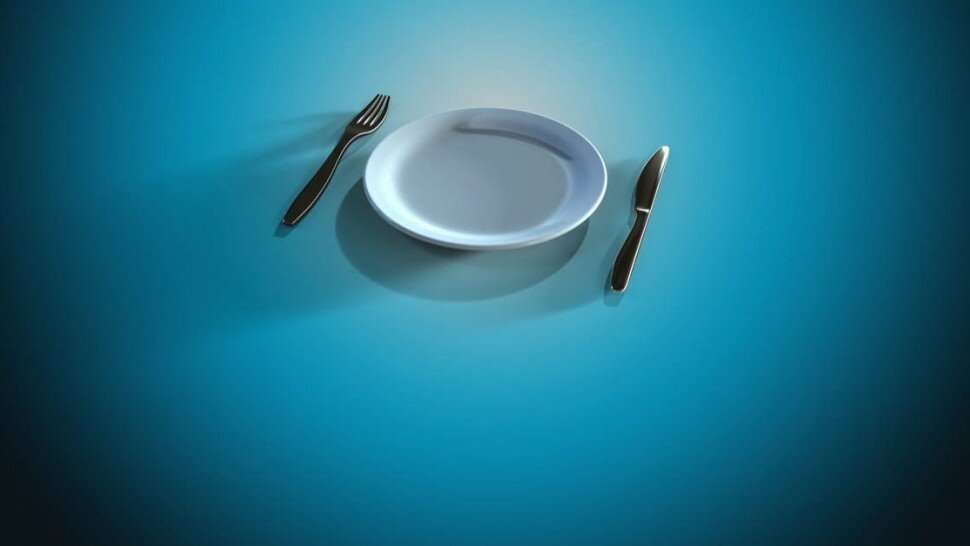

Les bienfaits du jeûne intermittent pour la santé (Intermittent Fasting)


Sommaire
- Régime basé sur les principes de la restriction calorique
- Qu’est-ce que le jeûne intermittent ou intermittent fasting ?
- Quand le Dr Frédéric Saldmann explique les bienfaits du jeûne séquentiel - Vidéo
- Les bienfaits et les dangers du jeûne intermittent
- La restriction calorique améliore la santé sans altérer l'horloge circadienne
- Le jeûne comme approche pour une longue vie en bonne santé - Dr Valter Longo - Vidéo
- Jeûne et hormone de croissance
- Jeûne intermittent et perte de poids
- Comment faire des périodes de jeûne intermittent ?
- Combien de temps pratiquer le jeûne intermittent ?
- Jeûne intermittent : programme type ?
- Jeûner le soir ou le matin ? Comment pratiquer le jeûne intermittent ?
- Peut-on boire du café pendant un jeûne intermittent ?
- Jeûne intermittent et sport
- Sources

p class="chapo">Le jeûne intermittent ou intermittent fasting (IF) est un régime alimentaire qui alterne entre le jeûne et la prise alimentaire selon un horaire régulier. Ce régime, basé sur les principes de la restriction calorique [1], fait l’objet de nombreuses recherches très prometteuses sur ses effets positifs.
Certaines études révèlent qu’il permettrait, sauf contre-indication médicale, d’aider à perdre du poids, réduire le stress oxydatif, la tension artérielle, prévenir le diabète [2], améliorer les taux de cholestérol ou la glycémie, voire d'inverser certaines formes de maladie.
En effet, le jeûne intermittent a gagné en popularité depuis le début des années 2000 en tant qu'approche saine de la perte de poids et se traduit par une amélioration des facteurs de risque cardiométaboliques [3].
Cependant, les effets positifs de cette nouvelle tendance de jeûne ne sont pas encore assez évaluées dans des essais cliniques suffisamment rigoureux pour tirer des conclusions trop hâtives.
Une grande quantité croissante de recherches suggèrent que le moment choisit (heures de jeûne le matin, l’après-midi, au dîner du soir, etc.) pour le jeûne est essentiel.
De la sorte, il est primordial de bien s’informer sur ce régime avant de le pratiquer et éviter certaines erreurs grâce à quelques astuces personnalisées adaptées à chaque être humain.
Qu’est-ce que le jeûne intermittent ou intermittent fasting ?
Les bienfaits et les dangers du jeûne intermittent

La restriction calorique améliore la santé sans altérer l'horloge circadienne
Des scientifiques ont étudié les effets positifs et les méfaits d'une alimentation limitée dans le temps sur les oscillations périodiques quotidiennes des métabolites et des gènes dans les muscles et des métabolites dans le sang.
Les résultats [10], publiés en 2020 dans la revue Nature Communications, montrent que l'alimentation limitée dans le temps (restriction calorique) n'influence pas l'horloge centrale du muscle et ouvre la porte à davantage des recherches sur la façon dont ces changements observés améliorent la santé.
En ce qui concerne la santé métabolique, ce qui est important n'est pas seulement ce qui est mangé, mais quand les aliments sont mangés. Des études ont montré qu'un moyen efficace de perdre du poids et de lutter contre l'obésité [11] est de réduire la plage horaire entre le premier repas et le dernier repas dans une journée. Il a également été démontré que la restriction calorique complète dans le temps - également connue sous le nom de jeûne intermittent - améliore la santé avant même que la perte de poids ne commence.
L'explication biologique du phénomène reste mal comprise. Ainsi, des scientifiques ont étudié les premières adaptations du corps à une alimentation limitée dans le temps. Leur étude a identifié un certain nombre de changements clés dans l'activité génétique des muscles, ainsi que la teneur en graisse musculaire et en protéines, ce qui pourrait expliquer l'impact positif d'une alimentation limitée dans le temps.
Cette étude est la première à examiner les oscillations des métabolites dans le muscle squelettique et dans le sang, ainsi que l'expression génique dans le muscle squelettique après une alimentation limitée dans le temps. En se concentrant sur les effets à court terme et précoces du jeûne intermittent, l'objectif était de dissocier les signaux qui régissent la santé de ceux associés à la perte de poids.
Les chercheurs ont observé que le rythme des gènes de l'horloge du noyau du muscle squelettique est inchangé par le jeûne intermittent, ce qui suggère que les différences sont davantage attribuables au régime alimentaire qu'aux rythmes inhérents.
Aussi, cette recherche est une étape importante pour éviter certaines erreurs et comprendre comment le jeûne intermittent peut améliorer la santé métabolique, tout en comblant le fossé entre les modèles animaux et les études sur l'intervention humaine.
De manière critique, l'étude a montré que le jeûne intermittent ne modifiait pas l'horloge centrale du muscle. Cela suggère que la rythmicité modifiée du métabolite et de l'expression des gènes causée par un jeûne intermittent pourrait être responsable de l'impact positif sur la santé.
Enfin, ces découvertes ouvrent de nouvelles voies aux scientifiques qui souhaitent comprendre la relation causale entre le jeûne intermittent et l'amélioration de la santé métabolique. « Ces révélations pourraient notamment aider à développer de nouvelles thérapies pour améliorer la vie des êtres humains atteints d’obésité », précisent les auteurs.
Combien de temps pratiquer le jeûne intermittent ?
Sources
- La restriction calorique, https://www.cairn.info/les-techniques-de-lutte-contre-le-vieillissement--9782130606642-page-47.htm
- Diabète de type 2 : surpoids et taux de glycémie élevé, https://www.le-guide-sante.org/actualites/medecine/diabete-type-2-surpoids-glycemie-eleve
- Syndrome métabolique – Risque cardiométabolique, http://hupnvs.aphp.fr/nutritionbichat/syndrome-metabolique-risque-cardiometabolique/
- Actualités Nutrition, Le Guide Santé, https://www.le-guide-sante.org/actualites/nutrition
- Chronobiologie. Les 24 heures chrono de l’organisme, https://www.inserm.fr/information-en-sante/dossiers-information/chronobiologie
- Un premier prix Nobel pour la chronobiologie, https://www.larevuedupraticien.fr/article/un-premier-prix-nobel-pour-la-chronobiologie
- Le jeûne protège contre les maladies associées au vieillissement, https://blognutritionsante.com/2019/01/25/jeune-regime-vieillissement/
- Mark P. Mattson PHD, Adjunct Professor of Neuroscience, https://neuroscience.jhu.edu/research/faculty/57
- Valter D. Longo, https://valterlongo.com/
- Time-restricted feeding alters lipid and amino acid metabolite rhythmicity without perturbing clock gene expression. Nature Communications, 2020; 11 (1) DOI: 10.1038/s41467-020-18412-w, https://www.nature.com/articles/s41467-020-18412-w
- Prise en charge de l’obésité : quelle est la place de la sleeve gastroplastie endoscopique ?, https://www.le-guide-sante.org/actualites/medecine/obesite-traitement-sleeve-gastroplastie-endoscopique
- Fasting: the history, pathophysiology and complications. West J Med. 1982 Nov;137(5):379-99. PMID: 6758355; PMCID: PMC1274154., https://pubmed.ncbi.nlm.nih.gov/6758355/
- Effects of intermittent and continuous calorie restriction on body weight and metabolism over 50 wk: a randomized controlled trial. The American Journal of Clinical Nutrition, 2018; 108 (5): 933 DOI: 10.1093/ajcn/nqy196, https://academic.oup.com/ajcn/article/108/5/933/5201451
- Un plan pour améliorer l’état de santé de la population, https://www.mangerbouger.fr/PNNS
- Les glucides, https://www.le-guide-sante.org/actualites/nutrition/glucides-macronutriments-nutrition
- Les lipides et acides gras, https://www.le-guide-sante.org/actualites/nutrition/lipides-acides-gras-macronutriments-apport-energetique
- Annuaire des hôpitaux et cliniques en France, https://www.le-guide-sante.org/le-guide/par-regions/par-departements/par-villes
- Les vitamines : carence et excès, https://www.le-guide-sante.org/actualites/nutrition/vitamines-carences-exces-ep-1
- Health effects of intermittent fasting: hormesis or harm? A systematic review. Am J Clin Nutr. 2015 Aug 1;102(2):464-70., https://academic.oup.com/ajcn/article/102/2/464/4564588
- Do intermittent diets provide physiological benefits over continuous diets for weight loss? A systematic review of clinical trials. Mol Cell Endocrinol. 2015 Dec 15;418:153-72, https://www.sciencedirect.com/science/article/abs/pii/S0303720715300800
- Café : bienfaits et méfaits sur la santé, https://www.le-guide-sante.org/actualites/nutrition/cafe-bienfaits-mefaits-sante-nutrition
- Thé : bienfaits et méfaits pour la santé, https://www.le-guide-sante.org/actualites/nutrition/the-bienfaits-mefaits-sante-nutrition
- Les régimes alimentaires : que faut-il savoir ? https://www.le-guide-sante.org/actualites/nutrition/regimes-alimentaires-que-faut-il-savoir
- L'activité physique est un traitement : interview d'un médecin du sport, https://www.le-guide-sante.org/actualites/forme-et-bien-etre/activite-physique-interview-medecin-sport